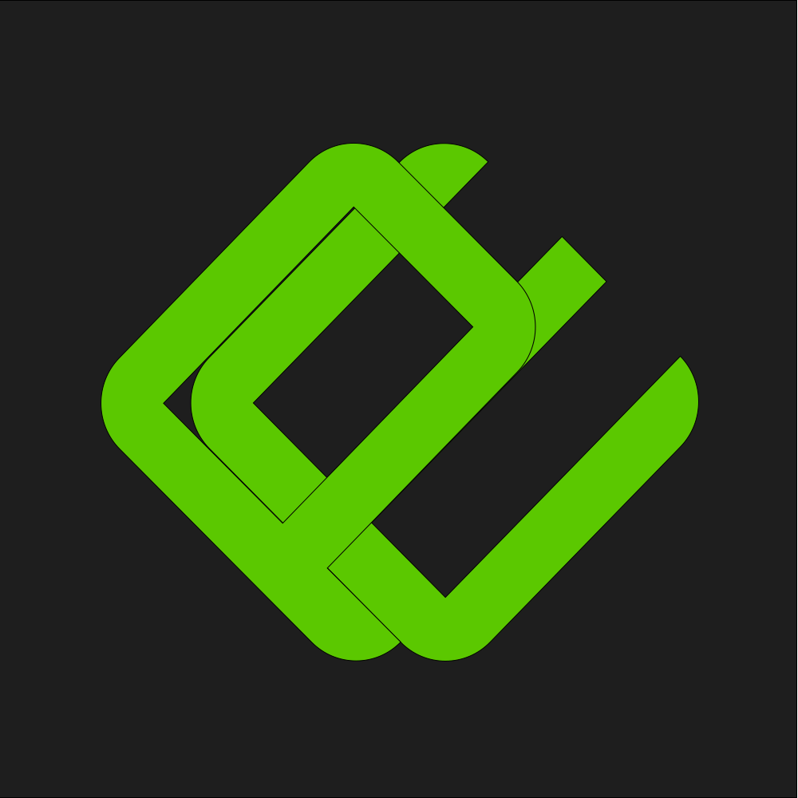
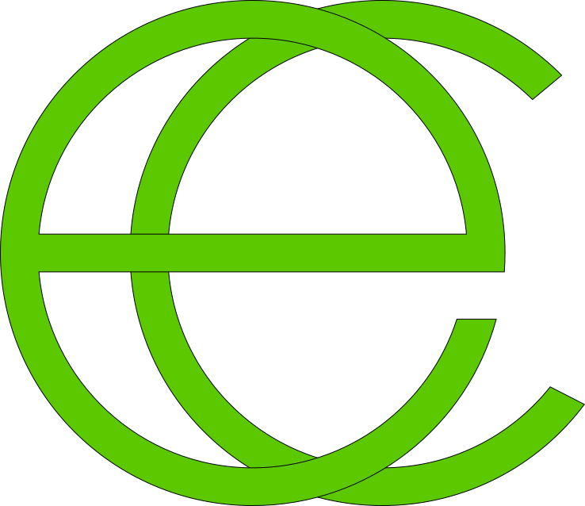

Juan Felipe Valencia
Desarrollador de Software & Creador de PROES
Sobre Mí
Desarrollador de software nacido de Cali, Colombia, especializado en la creación de soluciones tecnológicas para la comunidad hispanohablante. Mi trayectoria se ha centrado en optimizar la accesibilidad al desarrollo de software en español, con este propósito, en septiembre de 2018 inicié la arquitectura y creación de PIPE, un ORM diseñado para la gestión de bases de datos mediante sintaxis nativa en español.
Posteriormente, fundé PROES - Programación en Español, plataforma concebida para potenciar el ecosistema de PIPE e impulsar el desarrollo de herramientas tecnológicas adaptadas a nuestro idioma.
Proyectos Destacados

Plataforma y ecosistema de herramientas para la creación de código nativo en español.
Mapeador objeto-relacional para interactuar con bases de datos por medio de métodos escritos en español.

Herramienta que genera automáticamente interfaces CRUD para bases de datos por medio de métodos escritos en español.
Enrutador que permite procesar URL limpias y amigables por medio de métodos escritos en español.